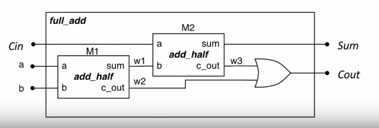

Structural Verilog
- Have seen how to write Verilog for combinational modules consisting of gates
- Each time we use a gate, we are creating an instance of that gate connected to the wires in the brackets
- This concept extends to all Verilog modules
Binary Adder
A half adder takes two 1-bit inputs and generates a sum and a carry out:
| A | B | sum | carry |
|---|---|---|---|
| 0 | 0 | 0 | 0 |
| 0 | 1 | 1 | 0 |
| 1 | 0 | 1 | 0 |
| 1 | 1 | 0 | 1 |
Can see there are two gates in this design:
- Sum is an XOR
- Carry is an AND
Can express in verilog as follows:
module add_half(input a, b //two inputs two outputs
output sum, carry);
xor g1(sum,a,b); //xor gate for sum output
and g2 (carry,a,b) //and gate for carry output
endmodule;
Full Adder
A full adder is similar but accepts a carry in to chain carries out
| Cin | A | B | Cout | Sum |
|---|---|---|---|---|
| 0 | 0 | 0 | 0 | 0 |
| 0 | 0 | 1 | 0 | 1 |
| 0 | 1 | 0 | 0 | 1 |
| 0 | 1 | 1 | 1 | 0 |
| 1 | 0 | 0 | 0 | 1 |
| 1 | 0 | 1 | 1 | 0 |
| 1 | 1 | 0 | 1 | 0 |
| 1 | 1 | 1 | 1 | 1 |
Can see that this is made using half adders:

Structural verilog allows for building modules from other modules to create a hierarchy. Can instantiate our half adder module twice to reuse it in our full adder module to create a hierarchical design.
module full_add(input a, b, Cin,
output sum, Cout);
wire w1, w2, w3;
//instance of add_half
add_half m1 (a, b, w1, w2);
add_half m2 (Cin,w1,sum,w3);
or(Cout,w2,w3);
endmodule;
Instantiation in Verilog
- Instantiate a module by invoking its name and then naming that instance
- Example above creates two
add_halfs namedm1andm2 - Connects the signals and ports referenced in the parentheses with the corresponding ports of the instantiated module
- Same as gate modules
- Order of signals determines connections
- This is error prone, as it requires to remember the order of the ports
- If port specification is changed, have to change the instantiation
- Should always instead use a named connection:
add_half(.a(a), .b(b), .sum(w1), .Cout(w2))
The port name for the module is preceded with a dot ., and the internal port is given in brackets.
Assign Statements
Verilog has assign statements to express combinational logic
assign result = a & b;
This is called a continuous assignment: it allows us to assign the result of a boolean expression to a signal. there is a range of bitwise operators:
| Operator | Function |
|---|---|
& | AND |
\| | OR |
~ | NOT |
^ | XOR |
~& | NAND |
~\| | NOR |
Here is the full adder from earlier using assign statements instead of gates. There is no need to describe the structure in terms of gates, only logic functions. As with gate instances, the order of assign statements is irrelevant.
module full_add(input a, b, Cin,
output sum, Cout);
assign sum = a ^ b ^ Cin;
assign Cout = (a & b) | (b & Cin) | (a & Cin);
endmodule;
It is also possible to assign implicitly in a wire declaration:
wire y;
assign y = (a & b) ^ c;
// equivalent to
wire y = (a & b) ^ c;
User-Defined Primitives
Verilog also allows you to create your own primitive modules which are defined using a truth table (though this isn't used much).
- Can only have one output and it must be the first port
?signifies a don't-care condition
primitive mux_prim(output mux_out,
input select, a, b);
table
// select a b : mux_out
0 0 ? : 0;
0 1 ? : 1;
1 ? 0 : 0
1 ? 1 : 1
? 0 0 : 0
? 1 1 : 1;
endtable
endprimitive;
Conditional Assignment
It is possible to have conditional assignment. Output is assigned to one of two possible expressions, dependant upon a condition:
// a multiplexer
assign y = sel ? x1 : x0;
The signal y will be connected to x1 if sel is 1, else it will be connected to x0.
Multi-bit Signals
Verilog supports multi-bit signals, called vectors or buses. A signal is declared as a bus by specifying a range:
wire [31:0] databus; //32-bit bus
//ports can also be multiple bits wide
module add16(input [15:0] a, b,
output [15:0] sum,
output cout);
By convention, ranges are specified [MSB:LSB], meaning a 16-bit signal is [15:0]. The range is specified preceding the signal name.
Numeric Literals
Literals use the format <size>'<radix><value>
- size is the width of the number in bits
- radix is
binarydecimal,octal orhexadecimal 4'b0000- 4 binary bits 0000
8'h4F- 8 bit wide hex number 4F
8'b0100_1111- 8 bit wide binary number
- Underscores can split long strings
1'b1- A single
1bit
- A single
Working with Vectors
When using the vector name, all the bits are being operated on. Logic operations performed on vectors are bitwise.
wire [3:0] a = 4'b0110;
wire [3:0] b = 4'b1010;
wire [3:0] x = a & b;
wire [3:0] y = a ^ b;
Can access parts of a vector by specifying a range after the signal name
assign y = some[3];- Assign 4th bit of signal
someto y
- Assign 4th bit of signal
- `assign z = some[4:3];
- Creates two bit signal z from 5th/4th bit of
some
- Creates two bit signal z from 5th/4th bit of
The widths of vectors in assignments should match. Verilog doesn't check and will let you do:
assign x[2:0] = y[1];
assign x[2:1] = a;
This is probably not what you wanted to do. Always check widths and remember that LSB is 0.
Combinational Arithmetic
Verilog supports basic arithmetic and comparison:
- Arithmetic
+,-,*,/ - Comparison
- Return
1for true and0for false
- Return
assign sum = a+b;
assign diff = curr - prev;
assign max = (a > b) ? a : b;
Vectors are all treated as unsigned numbers
Parameters
Constants that are local to a module that can be optionally redefined on an instance-by-instance basis.
module some_mod#(parameter SIZE=8)
(input[SIZE-1:0] X, Y
output[SIZE-1:0 Z])
When module is instantiated parameters can be changed. The module above is instantiated twice below, but each instance is 16 bits:
module some_other_mod(input [15:0] a, b, c, output [15:0] D, E);
some_mod #(.SIZE(16)) U1 (.X(a), .Y(b), .Z(D));
some_mod #(.SIZE(16)) U1 (.X(c), .Y(b), .Z(E));
endmodule;
Concatenation and Replication
Signals can be concatenated into a single signal using brace syntax.
//b is 8 bit
assign b = {a[3:0], 4'b0000}
wire [3:0] a, b;
wire [7:0] y;
//join two 4 bit signals to create 8 bit bus
assign y = {a,b};
Signals can also be replicated with a preceding integer or variable.
//c is also 8 bit
assign c = {4{a[3]}, a[3:0]};
Example: 2-bit comparator
A verilog module to compare two 2-bit signals a [1:0] and b [1:0]
module comp_2bit (input [1:0] a,b output a_gt_b);
assign a_gt_b = //complex combinatorial logic
//alternatively
assign a_gt_b = (a > b);
endmodule;
Behavioural Verilog
- Rather than describe how the circuit is constructed or it's raw function, describe how it behaves
- Implementation tools work out how to make hardware that fulfils the behaviour, considering the target architecture
The always block
An always block contains procedural statements that describe the behaviour of the required hardware.
always @ (a,b)
begin
x = a & b;
y = a | b;
end
- The
alwayskeyword starts a block - The sensitivity list (in brackets after the
@) contains the names of any signals that affect the block's output- The block is sensitive to
aandb - Signals the circuit should respond to
- Shorthand
always @ *includes all signals in sensitivity list
- The block is sensitive to
- Procedural statements between
beginandend - Give a more readable description of logic by describing how the output should change.
assignkeyword not used - always block is an alternative to using it
reg signals
- Since we are modelling at a higher level of abstraction, we use something other than wires
- Signals assigned to from within
alwaysblocks must be declared as of typereg - A
regis like a wire but can only be assigned to from within an always block- A wire is a connection between components and does not have its own value
- Cannot assign to a reg using an assign statement or use it to connect to the output of a module
- If you want to assign to an output port from inside an always block, it must be declared as
regin the module header too
The following two are functionally equivalent:
// x and y must be reg
always@ *
begin
x = a & b
y = a | b
end
//and
assign x = a & b;
assign y = a | b;
if Statements
Allows to describe a combinational circuit at a higher level of abstraction
always @ *
begin
if (x < 6)
alarm = 1'b0;
else
alarm = 1'b1
end
end
- Each branch can have more than one statement
- Use begin and end the same as braces in C
- Statements can be nested with other
- Condition can be anything the evaluates to a boolean value
- Can use comparisons and equality operators
- Can combine conditions with logical operators
!,&&,||
case Statements
Verilog features case statements that let us choose from multiple possibilities, similar to C.
always @ *
case (sel)
2'b00 : y = a;
2'b01 : y = b;
2'b10 : y = c;
default: y = 4'b1010;
endcase
A decoder is a good use case for a case statement
module decoder3_8(input [2:0] ival, output reg [7:0] d_out);
always @ *
case(ival)
3'b000 : d_out = 8'b00000001;
3'b001 : d_out = 8'b00000010;
//etc...
3'b111 : d_out = 8'b10000000;
endcase
endmodule
Can also describe a multiplexer:
module mux4 (input [3:0] d, input [1:0] sel, output reg q)
always @ * begin
case (sel)
2'b00 : q = d[0]
2'b01 : q = d[1]
2'b10 : q = d[2]
2'b11 : q = d[3]
endcase
end
endmodule
- Can assign to multiple signals from inside one always block
- If you assign to a signal from inside an always block, must never do so anywhere else
- Using
assign - In another always block
- Like connecting a wire to multiple inputs: not allowed
- Using
- Order matters in an always block as we are describing behaviour
- If a signal is assigned to more than once, the last one takes precedence
Avoiding latches
always @ *
begin
if (valid) begin
x = a | b;
y = c;
end
else
x = a;
end
- What happens to
yin the else branch? No output is specified - No output is explicitly specified
ylatches on previous value- Not ideal
- All outputs from the always block must be assigned to in all circumstances
- An output not being assigned to implies it should be latched or stored
- If no output is specified, output is no longer combinational
- Compiler would understand it to be a latch
A way to avoid this is to always use a default assignment at the top of the always block. The default will be overwritten by any subsequent assignments
always @ * begin
y = x;
if(valid) begin
c = a | b;
y = z;
end
else
c = a;
// y is x here
end
end
- Must always include any signal that is in the sensitivity list
- Must assign to an output signal in all possible cases
- This is to maintain combinational logic